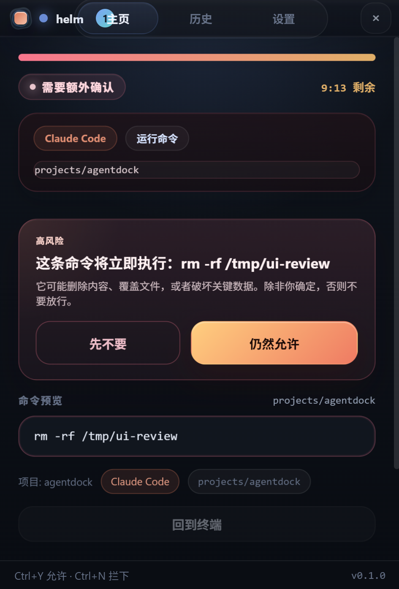
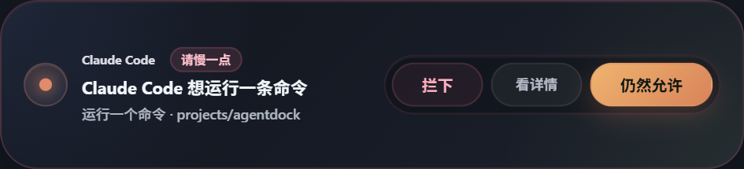
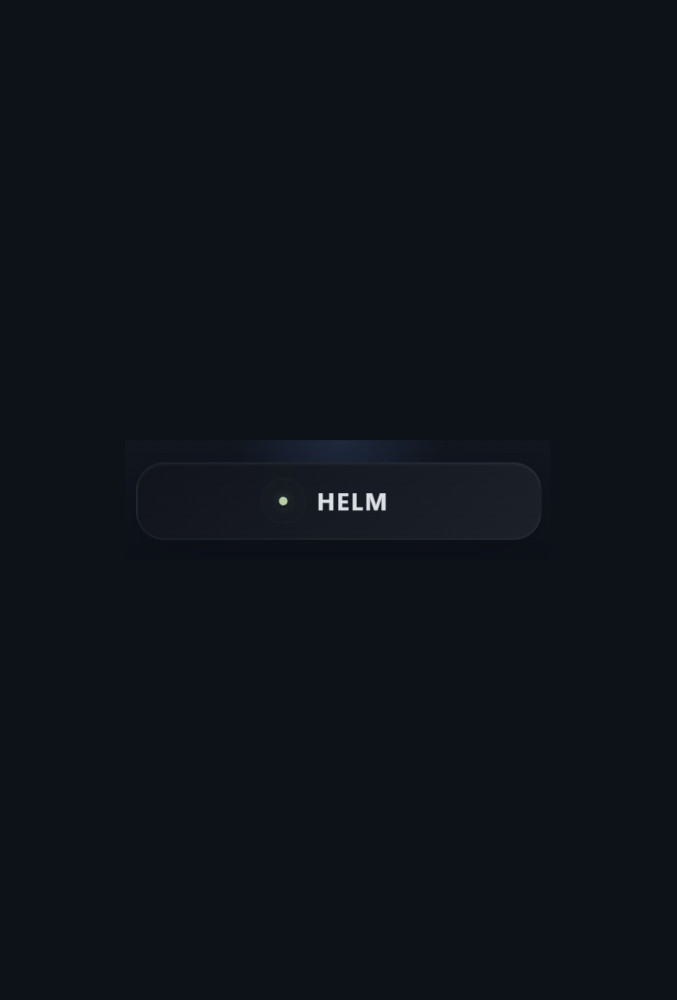

helm 会在 Claude Code、Codex、Gemini CLI 真正执行前把请求拦回桌面。 命令、改文件、计划和提问都能在 Windows 面板里确认，不再反复切回终端输入 y/n。
它的价值不是“管理一切 agent”，而是把真正值得你决定的动作稳稳接回 Windows 桌面，并且保持终端工作流不中断。
helm 从一开始就是围绕 Windows + WSL 工作流设计的：审批、会话、tray、minibar、回跳和启动链路都统一在桌面侧处理。

这是 helm 在 Windows + WSL 上当前对外提供的 Beta 资格。它覆盖 beta 阶段的持续更新、最多 2 台个人 Windows 设备，以及正式版发布后的 1 个月赠送使用期。

